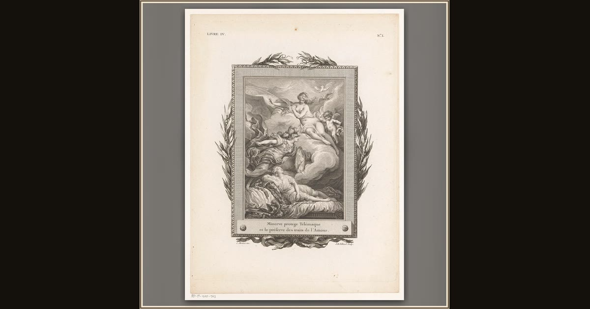

Athena Protects Telemachus
Jean-Baptiste Tilliard, after Charles Monnet · 1785 · Rijksmuseum · Amsterdam, Netherlands
In this delicate French print, the goddess Athena spreads her protection over young Telemachus as he sets out to find news of his father. Explore its place in Book I of the Odyssey.